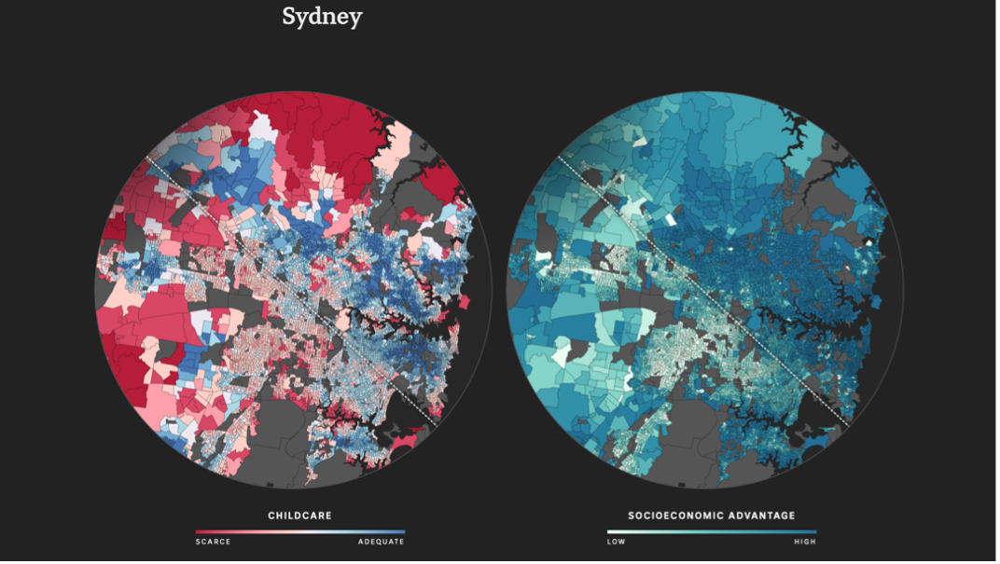
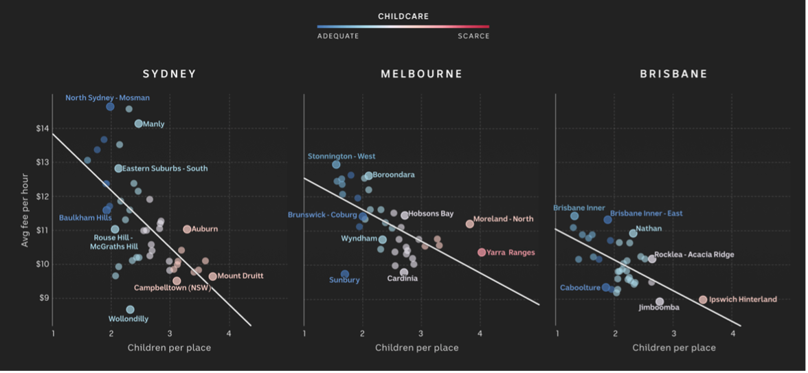
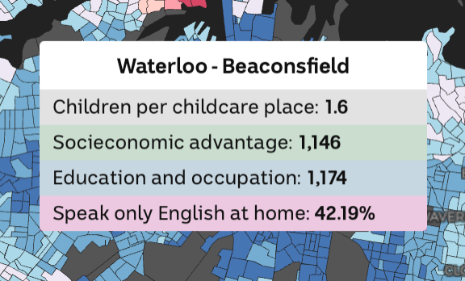

Theory Section
Critical Analysis Essay
Data visualizations have revolutionized the way we present and understand big data, offering innovative and more effective methods for conveying complex information. This essay will analyze a data journalism project focusing on its data visualization techniques, interactivity, user engagement, UI and UX design principles, data-driven storytelling, and emotional impact.
Project Overview:
The data journalism project that will be analyzed in this essay is "Mapping Australia’s Childcare Blackspots" by Inga Ting, Alex Palmer, and Katia Shatoba. The project was published by Australian Broadcasting Corporation (ABC News) on 21 March 2022. The project was inspired by Caitlin Wilson and Jonathon Peatfield, who moved from Sydney to a regional area in New South Wales expecting access to childcare but found that the competition was more intense. This reflected a wider issue in Australia, where many regions, particularly rural and less wealthy areas, lack sufficient childcare. Childcare providers tend to cluster in wealthier, inner-city areas, leading to better access there, while families in less advantaged regions struggle. This project sheds light on the disparities in childcare access across Australia, emphasizing the need to address these imbalances and improve availability in underserved regions. It also highlights social disparities such as education, language, and socioeconomic advantage.
Data Visualization Techniques:
The data visualization techniques used in this project are choropleth maps and scatterplot graphs. According to Robinson, choropleth maps are visual tools that emphasize variations in data distribution across geographic areas, typically using administrative divisions like countries, states, or regions (Robinson, 1982). Choropleth maps (Figure 1) in this situation are effective because they visually represent the distribution of childcare availability across different regions such as Melbourne, Brisbane, and Adelaide, making it easier for the audience to understand the geographical disparities. By shading areas based on the density of childcare services, these maps highlight the contrasts between “childcare deserts” and “oases,” helping viewers to quickly grasp where access is limited or plentiful. This technique simplifies complex data, allowing patterns of inequality and regional differences to be communicated clearly and meaningfully.
Regarding scatterplots (Figure 2), Friendly and Denis (2005) define them as a type of graph in statistics where two variables are plotted along two axes. Points are marked on the graph to represent the values of these variables for different subjects, making it possible to observe the relationship between the variables. In this case, each graph represents data from different cities in Australia and is useful for helping viewers understand if and how different cities might experience varying dynamics in childcare costs relative to the number of children per place. Scatterplots provide clear, interpretable insights into how these variables interact. By plotting each city’s data, the scatterplots enable comparative analysis and help identify trends and changes, making them a valuable tool for understanding the regional disparities in childcare dynamics in Australia.
Interactivity and User Engagement
The project missed opportunities to include more interactivity, as it is only prominently showcased in the final choropleth map. The designers could have included interactivity in the scatterplot graphs to make the data more engaging, perhaps by enabling users to select different points and see their specific results or by adding tooltips to reveal the unlabelled points.
The interactivity that is present includes multiple functions to enhance user engagement with the data for various regions of Australia. Users can explore data specific to any city or region by hovering over it, which triggers a tooltip displaying detailed information (Figure 3). Additionally, a search bar allows users to enter a specific postal code to quickly locate and view data for that area, and buttons enable users to filter the data by different categories. These interactive elements allow users to focus on aspects of interest and gain insights tailored to their needs. This interactivity is effective because it empowers users to engage deeply with the data by offering personalized and intuitive ways to access and analyze information. By providing immediate visual feedback through tooltips and allowing for targeted searches and filters, this interactivity enhances user engagement by making complex data more accessible and meaningful.
Regarding my background, I have encountered multiple data visualizations in the past, but I didn’t pay attention to the deeper underlying reasons behind them, such as simplifying complex data or conveying a story. Initially, I saw them as just tools to present information, without considering their impact on interpretation and decision-making. However, with my recent exposure to data visualization concepts and knowledge from in-class lessons, I’ve gained a deeper understanding of what makes a visualization effective or ineffective, such as the placement of data and color choices. I've learned to recognize both poor and efficient design choices, which has improved my ability to critically analyze visual data. This perspective allows me to analyze visualizations not only for their aesthetic appeal but for how well they communicate the data and its implications.
User Interface (UI) and User Experience (UX) Design Principles:
In this project, I identified a few UI and UX design principles to enhance the data visualization’s functionality and communication.
- User Interface: The project includes input controls such as filter buttons (Figure 4) and a search bar (Figure 5). These elements allow users to customize their interactions by selecting specific categories or searching for specific data regarding Australian cities. This personalization accommodates diverse user needs, enhancing usability and ensuring that users can efficiently find relevant information.
- User Experience: The project includes zoom in/out buttons (Figure 6) and map dragging on the choropleth map, which demonstrates great usability. These tools enable users to navigate spatial data intuitively, focusing on specific regions or viewing broader trends. The seamless interaction aids a better understanding of the data by making exploration straightforward and engaging.
- Personal Theoretical Insights: The clear design of the input controls provides intuitive affordances, indicating their functionality without needing instructions. Additionally, immediate feedback from the interactions reinforces user actions, enhancing the overall experience. These principles have been effectively applied, ensuring the visualization is both user-friendly and functional. However, one area overlooked is “accessibility,” such as color contrast for users with visual impairments. Adding this could improve inclusivity for more users.
Data-driven Storytelling:
The project effectively combines narrative elements with data-driven storytelling by highlighting the conflict of childcare accessibility in various Australian regions. It contrasts disadvantaged and advantaged areas and integrates socioeconomic themes by categorizing data through education, socioeconomic status, and language. The data visualizations clearly depict these settings and illustrate disparities between different locations. Narrative is crucial in communicating complex information within data visualizations, as it helps to contextualize and interpret the data. By framing data within a compelling story, viewers can better grasp intricate details and patterns. The use of interactivity further enhances understanding, allowing users to explore the data based on their specific interests or needs.
From this case study, I have learned that a strong narrative is essential for making data meaningful and accessible. Providing interactive elements empowers users to engage more deeply with the content, leading to better comprehension. For my future data visualization projects, I will focus on crafting clear narratives and incorporating interactive features to enhance user agency and facilitate a more intuitive understanding of the data.
Emotional Impact:
The data visualization utilizes a color palette of blue, green, and pink, each representing distinct categories such as education and language. The shades used draw attention to these categories, with the dominant color on the map emphasizing the most critical areas of data. The lack of transitions in the visualization limits its ability to convey dynamic changes or shifts in the data, which could have enhanced the overall tone and mood. Including transitions or adjusting the size of selected areas might have better emphasized how serious the issue of childcare is. Additionally, the tooltips that appear when hovering over specific data points contribute to the seriousness of the childcare issue by providing detailed information about the magnitude of the data presented.
Conclusion
In conclusion, the data visualization project “Mapping Australia’s Childcare Blackspots” by Ting, Palmer, and Shatoba is an important project that uses powerful storytelling elements and interactivity to shed light on a significant issue in Australian society. However, there were missed opportunities to enhance the storytelling aspects further and create a more engaging and accessible user experience. By drawing on these insights, future projects can build on these strengths while addressing the limitations in accessibility, interactivity, and emotional impact.